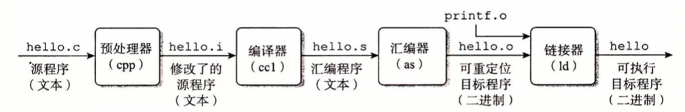

格物致知(0)——系统漫游
对于想要学习编程的新人来说，当下无疑是最好的时节，编程语言发展至今，新生代的语言在诞生之初往往伴随着强大的生态附属以及友好的语法特性，这大大降低了上手门槛，使得新手也可以轻松地完成任务而不必陷于囹圄。当下也是最坏的时节，现代编程语言高高在上，屏蔽了太多细节与原理，这鸿沟天堑阻绝了新人知其所以然的机会，却又如何技进于道？本系列将以CSAPP(Computer Systems: A Programmer's Perspective，中译本为《深入理解计算机系统》)为蓝本，接轨当下，让我们格物致知，打通认知体系的奇经八脉。
系统漫游
众所周知，计算机系统是由硬件和软件组成的，不论是超级计算机、集群服务器，还是家用电脑、移动端设备(平板、手机)、IoT设备（如路由器、摄像头）应皆如是。硬件五花八门、各司其职，对于非特定领域开发者来说，我们只需要了解两个核心硬件：中央处理器(CPU)和内存(主存，一般称RAM)即可。
除了CPU以外，还有一种叫图形显示器(GPU)的东西，这东西在当下可是大展身手，无出其右（同学，便宜的矿卡来一块不？都是锻炼过的，GPT用了都说好）。 机械硬盘(SATA)、固态硬盘(SSD)对于一台主机来说很重要，但站在程序开发者视角来说则没那么重要。 至于显示器、鼠标、键盘等等都属于外设，如果不是为了打游戏，那么研究它们毫无意义(doge)
硬件虽然服务于软件，但硬件才是大爹。事实上，互联网的崛起、从单点到分布式，以及历年的技术革命：诸如大数据、云计算、区块链再到当前潜在商业价值巨大的GPT，之所以能够surfing在浪潮之巅，根本上都是因为硬件的迭代升级。硬件的能力突破了某个瓶颈以后（算力、造价、效率等等...），业界大能才能把此前仅限于理论可行的方案落地，开辟出当前欣欣向荣的生态大环境。
那么硬件和软件是怎么沟通的呢？不同硬件厂商繁多，标准规格大相径庭，如果将这些都暴露给软件开发者，那简直是一场噩梦。事实上在上古时代，编程就是这样一件不可思议的狠活，程序开发者需要去理解使用的硬件，对着它的规格书使用原生接口来完成自己的工作。随着软件的发展，先驱者抽象出中间层（在软件开发领域，没有什么事是一个中间层搞不定的，如果有，就再加一个中间层），让它负责对接所有硬件，开发者只需要和这个中间层打交道即可。那么这个中间层是什么呢？它的真身就是我们常常说的操作系统(OS, Operating System)，操作系统实际上也经历了漫长的发展历史长河，一直到现在我们耳熟能详的Windows, Linux, Mac OS, Android, IOS等。时至今日，我们更愿意称它们为“现代操作系统”，“现代”这一限定词可谓意义非凡，它浓缩了这一路上面对重重困境披荆斩棘的解决之道，并最终沉淀成标准，任岁月打磨。
即使是家喻户晓的Windows，实际上也有着漫长的历史，严格来说，Windows不是具体的某个系统，而是一种徽章，从最古老的DOS到Windows 9x再到Windows NT，底层的变化翻天覆地，而Win 7（前身是赫赫有名的失败品Vista）之后历经Win 8、Win 10再到“内测”的Win 11，安全加固、系统生态等方方面面都愈发成熟。
如果说Windows是自立门户、自成标准，那么像Linux, Mac OS, FreeBSD, Solaris都算作类Unix系统，它们有着相当多的共同点，比如遵守POSIX标准，集成了GNU套件。
操作系统实际上也是软件，事实上，它就是我们开机以后第一个运行的体量最大的软件，OS提供了其他软件运行的土壤。现代操作系统整体分为两大部分：内核(kernel)和外壳(shell)，内核负责决策、调度和资源管理，里面住着的都是一等公民（常驻的内核代码：进程管理、内存管理、文件设备I/O、中断），外壳则面向开发者与用户进行交互：你只能通过使用我开放的接口、组合成你想实现的功能。通过这些接口（即系统API）我们可以编写各种程序，进而完成各种各样的软件，只不过受制于人（你得看具体OS厂商的脸色），能做的事儿有限。

你可能会问：为啥现代操作系统要分层呢？大家写的程序都和OS内核平起平坐，功能岂不是更丰富？嗯，上古时期DOS就是这么干的，所以那个年代病毒满天飞，挡都挡不住。
因此，在现代操作系统中，生态环境被分成了两部分：内核态与用户态。
- 与硬件打交道的代码通通运行在内核层，各类硬件设备分门别类一般有着业界统一标准或是自定义标准，OS通过设备驱动来与它们交互，它们以插件的形式，或先天集成在OS内核里，或后天装载插入；
- 我们日常所用的大部分软件，诸如chrome浏览器、QQ音乐、Steam等它们之中的大部分工作在用户态；
- 像是一些防护软件比如火绒、360、QQ电脑管家等则兼具用户与内核态，为什么说是兼具呢？因为用户态有功能局限性，防护软件要和那些无孔不入的恶意程序对抗，那势必要下沉到内核去获取更高的权限与更强大的power。实际上，操作系统并不仅仅提供用户态的接口，内核层往往也会提供，而除了少量做设备驱动和二进制安全研究的人士，大部分开发者是用不到它们的。
内核态与用户态是现代操作系统的概念，在很多上下文中会等价于Ring 0/3态，后者是站在CPU的视角来看的，虽然二者有一定区别，但基本绑定。
在我尚未学习内核/驱动编程的时候，总觉着写内核态程序的高人一等，直到上下求索、建立一定的知识体系后才明白：写程序就是写程序，本没有什么优劣，不过是所在的层与生态环境不同罢了。
操作系统作为中间层，其常驻的内核代码会控制CPU与内存的调度与分配，我们知道程序无非就是代码 + 数据（代码其实也是数据，嗯，这就是二进制安全的关键），每一行代码的执行都由CPU来完成，而数据则放置于内存。对于CPU来说，各厂商的指令集迥然不同，在CPU的世界里，一切都是二进制的，它的眼里只有0和1，对于一连串的0101...0011，不同厂商对他们进行了特有的定义，比如通过规定指令集定长，其中1100表示功能A、0011表示功能B、1010表示功能C等等。那么，按照这样的设计，当我们使用不同的CPU编写程序（包括编写操作系统）时，就需要去对着厂商的手册，一点一点手码0101吗？啊，这。。。
当下显然不会，这就要说起编程语言的发展历程了~
编程语言简史
机器语言
CPU按架构会有自己的指令集，它们的背后也确实就是0101，只不过厂商赋予了语义并在硬件上实现了相应的功能。上古时期的编程确实就是直接写0101（这个时候的CPU还称不上是CPU）来完成的，彼时我们称其为机器语言，显然，机器语言对机器绝对友好，但对程序员绝对不友好，它的缺点肉眼可见：难记难改难纠错、费时费力费树脂（卧槽，原！）。痛，太痛了！
世界上的第一个程序媛叫Ada，头像参考二进制安全必备神器：IDA Pro~
业界把机器语言称为“第一代计算机语言”。
汇编语言
为了克服机器语言不说人话的问题，大佬们给CPU聘请了翻译(诶，您给翻译翻译什么叫0101？什么他么的叫0101？什么他么的叫他么的0101？)，而这就产生了第二代计算机语言：汇编语言。简单来说，汇编语言就是将机器码翻译成与实际意义相关的英文
+
数字缩写助记符（所以汇编指令也叫机器码助记符），比如mov eax, 3表示把数值3赋值给寄存器eax（至于什么是寄存器，这个学到的时候再说）。汇编语言的好处就在于相比于机器语言，编写起来没那么男的女的折磨，我们先用汇编助记符来编写程序，编写完成后经过翻译再变成机器码给到CPU去执行，而这个负责翻译的模块则被称作：汇编器。
汇编语言是一种低级语言（这里的低级不含贬义，只是说它所在的层级较低，与底层更近），它和具体的CPU指令集绑定，因此并不通用，尽管相对机器语言书写上舒服了很多，但编写门槛依然较高无法让人满意。
高级语言
还记得前面讲操作系统时我们曾遇到的困境吗？不只是CPU，其他硬件的不同厂商标准规格都可能千差万别，如果需要开发者每一个都掌握，那属实 crazy。这一点对于编程语言来说也一样，既然汇编难用又不通用，我们何不再架上一层中间层，搞一个统一的语言出来，再多安排几个翻译员，每个人专门负责从统一语言到某一个特定汇编语言的翻译工作。通过这一中间层的屏蔽，开发者只需要掌握这门统一语言即可编写在任何CPU指令集上运行的程序，而无需了解特定的指令集。（你看，我就说没什么困难是一个中间层搞不定的吧~）而且，在设计上我们也可以让这门统一语言尽量说人话，从而降低编写的难度与维护的成本。
而这，其实就是第三代编程语言：高级语言的由来。只不过，在漫长的历史长河中，有太多大能都达成了此共识，其结果就是高级编程语言如雨后春笋般，甚至直到2023的现在还在源源不断的涌现，从古早的BASIC、PASCAL、C、FORTRAN到现在的Go、Rust，它们都是高级编程语言，随着时代的进步，其中难免有一些被环境所淘汰，但也有一些历久弥新，每个不同的高级语言都蕴含了作者独特的审美与对环境生态、软件开发的理解，伴随着社区、使用群体的发展各自开宗立派、培养着自家忠实的拥趸。
高级语言在设计上大体分为两派：编译型和解释型。前者（比如C、C++）主张对编写的源代码进行前置处理：通过一种叫“编译”的方式把它变成汇编语言，再由汇编器变成机器码，最终在机器上执行；后者（比如Python、Javascript）则主张后置处理：在运行时通过解释器来一步一步地、当我执行到具体的某一行时，让同声传译把它变成机器码执行。显然，前者把一些重活放在了编译期，得到的好处就是运行时更快，但后者则因为实时处理的模式往往在语法上可以更加灵活。而在高级语言发展过程中，这两派逐渐水乳交融、佛道双修，比如像Java、C#，它们都是半编译、半解释型，再像是Javascript、Python这种一开始做成解释型的，为了能够局部针对热点代码提速，也有JIT或是预编译的能力。
总之，高级语言在设计上与自然语言（英语）更接近（可别跟我提易语言，真不熟……），而与硬件功能相分离，便于开发者掌控而屏蔽底层差异。高级语言的优点在于：通用性强、兼容性好、便于移植，但同样的，天下没有免费的晚餐，相比直接写汇编来说其生成的代码更加臃肿，性能上也有所差距。因此像操作系统这种对性能要求苛刻的程序会经常在高级语言里内联汇编代码（通俗理解就是：高级语言的局部嵌入汇编代码，这需要高级语言的支持）来提速。
但另一方面，在2023的今天，现代编译器已今非昔比可谓十分强大，在现代的一些架构上已然抹平甚至超越了使用汇编语言来编写的程序性能（编译器比我聪明系列）。
缘起"Hello, world"
“Hello, world”之于编程，就好比“衬衫的价格是”之于英语听力。不管你是何门何派、哪个语种，入门的第一站都是"Hello, world"，经久不衰。这一切，都要从此说起：我们意兴盎然的选择了某门语言，开始修炼本门功法，不同门派的功法各有千秋：有些功法小巧精妙(C)，有些功法直捣黄龙(go)，有些功法艰深晦涩(C++)，有些功法必先自宫(Rust)，有些功法大开大阖(Java)，有些功法乱七八糟(你猜我说的是谁？)。
然而不管我们选择了哪一派，从它变成母语的那一天开始，我们就被深深地打上了相应的烙印。尽管在修炼过程中我们能够解决越来越多的问题，但与此同时它所植入的灵魂烙印也把我们的解题思维牢牢限制在本家系统之内。直到皇天不负有心人，本家功夫大成，我们得以窥探别门别派的心法口诀，坐而悟道。而本门功夫，修炼周期各有长短，这期间一旦受其他门派影响，轻则自我怀疑，重则道心破碎。
有些选择了C语言的小伙伴，学了一年也不会做任何酷炫的app，只会在黑框框里跑四则运算，看到邻家8岁的小男孩都用python写AI画图了，顿时道心破碎，弃C如敝履。
我们现在分别使用C、Java和Python来写一个Hello, world：
1 | |
1 | |
1 | |
嗯，按照各家功法所述，我们应该分别保存成hello.c, hello.java, hello.py。还记得功法让我们怎么称呼它们吗？对，源文件！这些文件里的内容就是源代码（可能pythoner更习惯称它为脚本、脚本代码），那么源文件怎么执行起来输出“Hello, world”呢？这个时候，各家功法就有所分歧了.
C
C是一门编译型语言，使用C语言编写的hello.c需要经过预处理器、编译器、汇编器、链接器来一步一步处理，最终生成二进制可执行文件，不同平台都制定了可执行文件组织结构的标准，比如在Windows里叫PE(Portable Executable)，像是我们平时双击的xxx.exe就是典型的PE可执行文件（实际上.sys, .dll也都是PE，前者是内核态所运行的驱动程序、后者是用于共享的动态链接库），而在大部分类Unix系统里用ELF(Executable and Linking Format)），它们往往没有后缀名。实际上后缀名只是一种浮于表面的印记，通过盖戳的方式让人类更容易分辨它是一个什么文件，真正决定文件制式的是它的内容信息，图片、视频、文本、可执行文件，他们各有各的标准结构。
既然后缀名只是印记，那岂不是可以用来诱骗？早年的恶意软件、病毒可不就是充分利用了此种手段，整个Windows乌烟瘴气。用户也可以利用这一小手段：比如我上小学的时候，隐藏文件早就不用系统提供的方法了，我会把他的后缀改成其他资源的类型，诶嘿，你打不开了吧！后来到了中学，懂得套路又多了一些，这次就直接打开二进制编辑器，偷偷改掉某某视频的文件头~
Mac OS逼格比较高，它的可执行文件格式叫Mach-O（Mach Object File Format），是一种类似ELF的制式，iOS也是这套。
也就是说，我们的源代码经过了重重流水线关卡，最终变成可执行文件。现在我来问你，这每道关卡都在折腾啥？相信这个问题应该难不倒有一年以上C编程经验的同学，毕竟C派重视基础，门徒大都喜欢刨根问底。

一言以蔽之：预处理器负责展开头文件、处理宏；编译器负责将加工后的源文件翻译成汇编语言源代码；汇编器再将汇编语言转化成机器码、生成可重定向的目标程序；最终由链接器整合所有目标程序，按照可执行文件的制式整合成可执行文件。整个过程说起来简单，但其实每一步展开都是宏篇巨幅。作为编程导论，我们暂不去深入了解每一步都是怎么做的，我们的疑问是：为什么需要这几步？如果上面的内容你有认真看过并思考过，那么这个问题的答案是显而易见的：我们需要在设计上分层，每一层各司其职，邻层相濡、隔层相忘。上图的中间部分，从C源代码编译成汇编、再从汇编到机器码这一过程相信通过上文你已经十分理解了，那么剩下的头尾各有什么作用呢？
先说头部的预处理器：预处理器这一步实际上是C语言特有的，它在设计上有一个头文件和源文件的区分，头文件做公开声明，源文件做内隐实现，你在写代码的时候可以引用别人的代码库，比如hello.c中的printf函数，它在前面通过#include宏引入的stdio.h中声明，作用就是在标准输出按照C-format制式打印字符串。此外，C语言还支持一种被称为宏(macro)的强大功能，宏和指针可谓是C的两大神器，一旦掌握了这两个东西，写起C来可谓运斤成风。宏代码的替换也是在预处理器中完成的，而具体怎么操作，等我们深入学习C语言时再做展开。
再说尾部的链接器：实际上我们生成的hello.o只包含了在hello.c中书写的单个文件的那部分代码，而对于整个工程项目来说，我们可能会写出一大堆源文件，且除了自己写的代码，可能还需要引用别人的生成代码（标准库或是第三方库，比如例子里的printf.o就是标准库所提供的），而把这些.o文件组织成最终的单一可执行文件，就是链接器的工作。
实际上在C语言里，上图的printf函数默认情况下并不是直接通过printf.o提供的，C标准库大都以动态链接库的形式存在，在程序被加载器吊起到内存时会挂载所需的动态链接库。当然，这是后话，新人不必急于理解。至于加载器，唔，可执行文件在磁盘里躺着的时候和被加载到内存去执行的时候，结构上还是有些差异的，需要个引导者来做初始化操作。
待续。。。
本博客所有文章除特别声明外，均采用 CC BY-SA 4.0 协议 ，转载请注明出处！